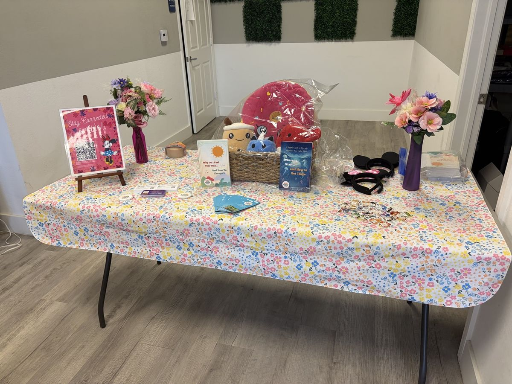
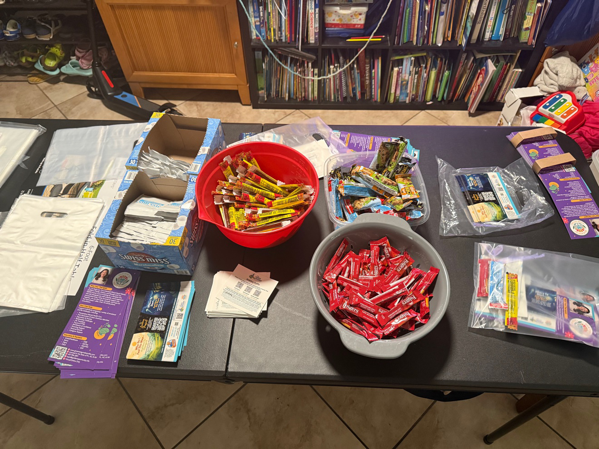

Southwest Florida Community Reach Program
Building emotional intelligence access across Southwest Florida, one home at a time.
The Southwest Florida Community Reach Program places emotional intelligence tools, informed by emotional wellness research, directly into the hands of individuals, families, youth and community spaces where early support can make a lasting difference.
Our Reach So Far, and Where We Are Going
About 575 families reached so far through this program. Our goal: materials reaching 50,000 homes across eight Southwest Florida communities.
Cape Coral · Fort Myers · Fort Myers Beach · Babcock Ranch · Estero · Bonita Springs · Naples · Marco Island

Meeting Communities Where They Already Are
Rather than waiting until people are already in crisis, this program places supportive emotional intelligence materials into everyday environments where access is easier, more natural and more immediate.
- Bulk distribution of emotional intelligence books into Southwest Florida communities
- Books shared at community events, school related initiatives and local outreach efforts
- Take home distribution so individuals and families can keep engaging with the material privately
- Placement into waiting spaces, support environments and trusted neighborhood access points
- Resources designed to be approachable, practical and easy to engage with independently
- Support for early awareness, reflection, communication and emotional skill building

Every Contribution Moves Resources Farther

Every contribution helps move resources farther into the community. Support covers the cost of books, outreach preparation, distribution logistics and local partnerships, and it widens access across diverse neighborhoods.
A single book or magnet in the right hands can spark reflection, open a conversation or give someone words for what they have been feeling for years.
Be part of what changes the trajectory of a community. Every dollar funds direct community access to emotional intelligence tools.
Stronger Through Collaboration
This program grows stronger through collaboration. Schools, faith communities, neighborhood organizations, local businesses and healthcare providers all play a role in how far these resources can travel.
If your organization shares a commitment to prevention, early access and community wellness, we want to hear from you. Distribution partnerships, in kind support, event collaboration and sponsorship opportunities are all available.
Mental and emotional wellness does not begin in a clinic. It begins in the quiet moments: the conversation at the kitchen table, the book picked up in a waiting room, the resource someone finds before they know they need it.